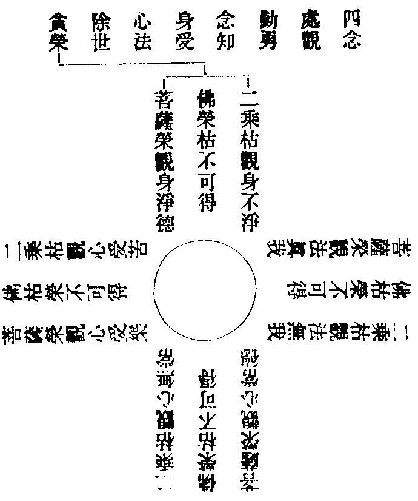
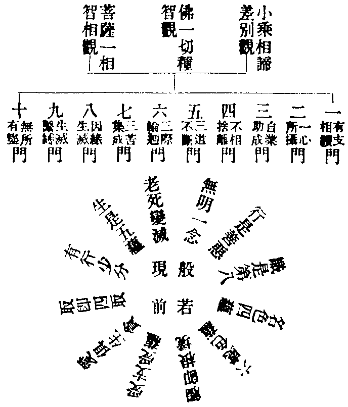

大方廣佛華嚴經吞海集卷中
五兜率天宮會
二十三昇兜率天宮品。一徧一切
經中。有百萬億莊嚴。皆是迴向心廣大所致也。建百萬億幢。懸百萬億幡。垂百萬億帶。然百萬億香。布百萬億鬘。持百萬億扇。執百萬億拂。有百萬億三賢菩薩二十八天八部眾等。皆從迴向起。俱來圍遶。佛放膝輪光。徧照十方界。十幢菩薩。俱來雲集一切寶莊嚴殿。
二十四兜率天宮偈讚品
意曰。諸法無自性。即見般若體。
二十五十迴向品。悲心救護苦眾生
意曰。妄亡已滅。則與萬類而同迴向三處。一真如實際是所證。二無上菩提是所求。三法界含識是所度。能迴之心所迴善行。
經中。金剛幢入智光三昧。受加與智。起定說法。一救護眾生相。十波羅蜜慈悲。雖救眾生。離眾生相。
四至一切處迴向。所修一毫之善。同於實際供養五無盡功德迴向。眼不見不淨世界。不見異相眾生。
六堅固一切善根。為大國王。以內外財六十門施七順眾生迴向。小善廣善。盡未來際。迴向一切眾生。
十等法界迴向。廣行法施。圓滿梵行。見聞等於法界。說此迴向已。各百萬億佛剎微塵世界六種震動。
六他化自在天宮會
二十六十地品。寄相顯實
意曰。地體亡言。將旨就詮。寄十地修行相。顯不可思議地體。一念事行三心齊具。可為玄矣。十地菩薩。雲集摩尼寶藏殿。將三賢作加行。無昇天偈贊。用等覺為勝進。
經中。金剛藏菩薩。入大智慧光明三昧者。欲說不思議諸佛法光明。即十地法相。天親菩薩。造十地論解十地經云。若金剛即藏名堅。量云。十地信悲慈捨有法。不可破壞宗。堅實生長故因。由如樹心。若金剛之藏名堅。量云。十地善行有法。不可破壞宗。堅實生長故因。由如胎孕在藏。意曰。經中說。字是名句文。因十地名句而起正解。因解而起正行。因行而入地智。天親論主。剏造六相義。令入智地為總相。餘九為別相。乃云攬別為總。分總為別。同帶總名。功用各異。共成一緣。各住自位。諸法常寂滅壞也。世界常安立成也。正同常異。正總常別。無礙之義則可見矣。經中。十方諸佛與智增辯摩頂增威。從三昧起告諸菩薩言。大願決定。大善決定。無雜決定。不可見决定。廣大決定。究竟決定。十地相也。若智光明。是最上道隨證智也。
意曰。十地帶數釋也。若地之極喜喜。是加行智。若地即極喜。是根本智。若極喜之地。後得智。若極喜即地。泯同真界。餘九地各有四釋。准知。良由一切眾生本有智光明地法。則金剛藏分別說也。於智光明中。說十地名已。不復分別。
一解脫怪默騰疑請法深難受止。二解脫月歎眾生聞請不堪有損止。三解脫月如來護念請字母智根本。四大眾同聲請。五佛光說偈請。金剛藏云。此處難宣示。我今說少分。論中科為九分。一三昧分。入定。二加分。與智。三起分。事訖。四本分。略名。五請分。勤重。六說分。示相。七地影像分。四河十山大海寶珠。八利益分。見聞為種。九重頌分。
意曰。十地中名句文有法。字字契如宗。難說難示故因。如空中鳥跡。謂空處之迹。迹處之空。互相屬著不相離性。以為地體。取空太寬。取迹太狹。言言見諦。是智行非慮境也。
十地通行十行。一信。二悲。三慈。四捨。五知諸經論。六善解世法。七慚愧。八莊嚴。九供養諸佛。十如說修行。
一極喜地。斷異生性障。證徧行真如。於住地心中。發起供養諸佛等十種大願。見諸眾生心墮邪見。慈心修捨。於內外財無所恡惜。推求後地相及得果。如鍊真金數數入火。多作閻浮提王。能動百佛世界。
二離垢地。十種方便。心入心中。斷邪行障。證最勝真如。於住心中。修起十種善業。一性不殺生。二不偷盜。三不邪婬。四不妄語。五不兩舌。六不惡口。七不綺語。八不慳恡。九不瞋恚。十不謗三寶。十善無二。用心不同。一下三品修。四大洲受生。有總別報勝劣苦樂間起。二中三品修。從四王至他化。欲心微薄苦少樂多。三上三品修。色界至有頂。捨念清淨無有欲想。四上上品修。斷分別是預流果。斷俱生後三果。五上勝品修。緣覺果。百劫鍊根。入見不出。證無學果。六上極品修。菩薩道前伏二障俱生。修道漸斷。七不善業道。故意殺生等。永斷其因。因有三品。上品地獄因。中品畜生因。下品餓鬼因。後得為人。有二種報等流。一者為短命。二者多病。故意偷盜。一者貧窮。二者共財不得用。故意邪婬。一妻不貞良。二者不得隨意眷屬。故意妄語。一者為他所誑。二者被人誹謗。故意兩舌。一者眷屬乖離。二者親族弊惡。故意綺語。一者語不明了。二者言無人受。故意惡口。一者言多爭訟。二者常聞惡聲。故意慳恡。一者心不知足。二者多欲無厭。故意嗔怒。一者為他所害。二者求其長短。故意誹謗。一者生邪見家。二者心懷諂曲。永斷其因。不受其果。
三發光地。起十種深心為加行。於入心中。斷闇鈍障。證勝流真如。於住心中。如說修行。乃得佛法。雖修世行。但隨順法故行。而無樂著。修起四禪八地定。厭下地為苦麤障。忻上地為淨妙利。用七種作意四無間道。伏下欲界九品俱生惑迷事。用初禪未至定為加行。入初禪根本定。四禪共有十八禪支。初禪三禪有五支。二禪四禪有四支。其定光明如鍊金法出火秤兩不減。此地多作忉利天王。
三界九地者。
△一五趣雜居地。有四洲六欲天。五受間起。憂苦極多。喜樂捨少。嗔欲心俱。意有憂受。俱無輕安樂報。若修則有。故名散地。
△二離生喜樂地三天。一大梵。二梵輔。三梵眾。用尋伺。治欲界憂受。有五。尋伺喜樂一心。
△三喜勇浮動地三。一光。二少光。三無量光。用內淨一心。治去尋伺。有四。內淨喜樂一心。
△四離喜妙樂地三。一淨。二少淨。三徧淨。治前喜受。開內淨為捨念。正知識身受樂一心。
△五捨念清淨地三。一無雲。二福生。三廣果。凡聖雜居。上有五天。唯不還果人居。一無煩。二無熱。三善現。四善見。五色究竟。捨念行捨一心。
四焰慧地。觀察眾生界法界為加行心。於入心中。斷煩惱障。證無攝受真如。住心中。以大智慧。觀三十七品助道法。

佛於雙林樹間。入般涅槃者。四枯四榮。皆除世間貪憂。八倒俱無。若能觀身。淨與不淨俱不可得。即見佛不曾入般涅槃常住世間。深觀念處。即座道場。眾生根異。更說餘法。於四正勤四神足五根五力七覺八聖。一一開解眾生。於第六識中俱生二見。到此地中永不現行。更以大慈心。知恩報恩。如真金作莊嚴具。多作須夜摩天王。
五難勝地。起十種平等心為加行。於入心中。斷下乘般涅槃障。證類無別真如。知真諦俗諦無差別智。愍諸眾生不能厭離。曲以五明工巧。利益世間。一內明。知因識果。二因明。破邪立正。三醫方。療病。四工巧。書數。五聲明。字錯謬。如上妙真金用硨磲磨瑩。作知足天王。
六現前地。觀十種平等法。而為加行心。於入心中。斷麤相現行障。證無染淨真如。於住心中。以大悲為首。大悲增上。大悲滿足。觀三界十二因緣無有自性。從無明支至老死支。皆是智光明。則身語意善不善行動用之中。皆是般若現前也。

若依地論。相諦差別觀中。有支相續門。解經成答相。世間受生皆由著我者。成也。不正思惟起於妄行。答也。於第一義諦不了名無明。相也。二一心所攝門。三界所有唯是一心。歸本也。如來於此一心。分別十二有支。流末也。若依一切智相觀。科經不同。一切種智觀。科經不同。文勢多端。不可具述。
意曰。能引無明行。所引識等五。能生愛取有。所生生老死。識名色六處觸受種子。是前前世中。多念薰下。忽然為無明行。一念招聚。隨業強者。先潤愛取有。潤時則次第。於一生總報中生起。此十支因二支果也。若三世說者。過去二支因。現在五支果。現在造愛取有因。本來世有生老死果。雖然因果無差。於此般若現前。
名色支義也。貫起十二支。收一百法。知五蘊之多少。明緣性之寬狹。
△一支性俱雜。收九十三法。色蘊為色支。四蘊為名。除六無為滅盡定。
△二支雜性不雜。收二十八法。支雜性處觸受。然是無記。不雜善惡性。想全三少分者。想是任運報生無記。色少分者五根五塵。行少分者別境五作意睡眠。識少分者前七識并意處觸受。
△三支性俱不雜。收二十法。想蘊全。色少分五塵。行少分收別境五作意睡眠。識少分前七識。餘十一支義理。恐繁不述。此地善根。如真金用毗琉璃寶磨瑩。多作善化天王。
七遠行地。起十種加行心。空中有方便慧。有中起殊勝行。雖善修空無相無願。而慈悲不捨度生。於入心中。斷微細現行障。證法無別真如。於住心中。以大悲智。修起一切菩提分法。雖念念住無相中。少有功用。如轉輪王遊四天下。若是八地報得行。任運成就。如大梵天王遊千世界。不假功用。從初地已來。但以願力超過小乘。今七地中。以自力超過小乘。如王太子藝業成就。能念念入滅定。亦念念起。如以真金用妙寶間錯。多作自在天王。
八不動地。善修清淨道。離心意識。得無生法忍。為加行心。於住心中。斷無相中作加行障。證不增減真如。相用煩惱不能動為。深行菩薩。世出世間心念不生。諸佛世尊勸請七事。汝未曾得。勿復放捨於此心門。是時菩薩一念所生智業。從初地至七地。用阿僧祇功德。不及一分。何以故。先以一身起行修行。今此以無量身修行。以善巧智觀一切境。於諸趣中示同其形。普現色身三昧而為說法。遠離身想分別。以三世間而為十身。一切眾生本來共有。一身若具九。則十身有百也。且如一牛具有十身。一還債。是業報身。二水艸不闕。是眾生身。三皮毛筋角。是國土身。四從高而下。是虗空身。五步步踏實。是智身。六力困而臥。是聲聞身。七見黃葉。是緣覺身。八舉意利他。是菩薩身。九忽然亡已。是法身。十一具前九。是如來身。若說修成。如來身上自具十身。謂菩提願化力莊嚴威勢意生福法智。此地菩薩成就佛身業自在。有金剛力士常隨侍衛。如真金作大寶冠置在閻浮提聖王頂上。多作大梵天王。
九善慧地。以無量智觀察境界為加行心。於入心中。斷利他門中不欲行障。證智自在真如。於住心中。觀眾生稠林行。皆如實知。以四十種辯才。說三乘法。教化眾生。
意曰。在心為智。發言為辯。於一毛塵具四十種辯才。則前為所是法。後是能為義。詞則訓釋不謬。樂說則聽者開解。
△一自相有二。總法別義。
△二同相有二。性法相義。
△四說相有二。略說法解義。
△六真諦法俗諦義。
△八教道法證道義。
△十住持智法行門義。
△佛說一百法皆具。萬像皆具。不學而知。但聞其言未見人哉。此地菩薩。得十種總持。作大法師。處於法座。於一音中現種種音。令諸眾會皆得解了。情無情物皆演妙音。成就如來語業自在。如真金為大寶冠在轉輪聖王頂上。為二千世界主。
十法雲地。以無量智慧觀察覺了入受職位。為加行心。於入心中。得離垢三昧。斷於法中未得自在障。證業自在真如。於住地心。受勝職位。三昧現在前時。大蓮華忽然出現。量等百億世界。菩薩座此華時。大小相稱。身諸毛孔普放光明。照法界已。從足下入。十方菩薩即知成佛。十方諸佛。放眉間光。入此菩薩頂。名曰受職。成就佛意業自在。具上上微細智。能安受攝持十方諸佛大法明大法照。於一念頃。周徧十方示成正覺。解脫言。若菩薩神力能如是者。佛復云何。是時金剛藏菩薩。入佛國土體性三昧。其身量等虗空。時諸大眾。見菩提樹及一會菩薩俱在金剛藏身中。得未曾有。金剛藏言。菩薩神通如一塊土。如來神通似大地土。不可云喻。如上妙真金以大寶莊嚴置在大自在天王頂上。多作摩醯首羅天王。
△八地影像分。地中行成智性。是所喻法。池山海珠。是能喻依。依上之義是影像也。是地之影像。以見邊之喻似地中教證也。池喻所修行願。山喻修成功德。海喻無漏智德。珠喻轉盡性德。池喻始則非一終則非異。山喻能依非一所依非異。上皆無差之差。海喻十德不同德無別物。差即無差。珠喻唯一智性前後增明。無差不礙差。池是圓家漸。山是圓中漸。珠喻漸圓。海喻圓圓。天台。以華嚴為漸圓。位位成佛。以法華經為圓圓。上是法圓。不說地位。下機圓。普被聲聞。華嚴。以法華經為漸圓。會三乘歸一乘大海。華嚴本法因該果海為上圓。果徹因源為下圓。
七重會普光明殿
佛自入剎那際三昧者。無際之際。信心最初之際。不見剎那為短多劫為長。諸法空故。二行永絕。住於佛住。得佛平等。則無障處。普眼問者。欲見普法故。初則聞名不見推求不見觀察不見靜座不見。後如來教起見方者。若捨境別求。則未識普法真體。若見一法入於一切名曰普。一切入一名曰賢。乃真見也。
二十七十定品。大用深廣
普眼見普賢在如來前。告普眼言。有十大三昧。
一普光明智三昧。用依於體。
二妙光明智三昧。徧照身心。
三往佛國土三昧。神通如意。
四清淨深心三昧。供佛之行。
五過去莊嚴藏三昧。智之境。
六未來藏三昧。如實了知。
七現在莊嚴三昧。諸佛世界。
八三世眾生三昧。入出自在。
九法界三昧。十八界。
十無礙輪三昧。佛二十一功德。
二十八十通品。大用難思
一他心之智通。因中則知自心。知他人心。皆變影像。不如實見。唯佛果位能徧知也。正見他心。常了自心。若佛智外別有眾生心。則失具分唯識。只名半頭唯識。他心本質即是自心。
二天眼之智通。見六趣果報。
三宿住之智通。得九世眼如現在。
四未來之智通。見因知果。
五天耳之智通。遠細皆聞。
六無作即智通。大用度生。
七言音之智通。眾生之言音。
八色身之智通。三說。一云佛無色。二云有色。三云若悲智雙運無色現色。有四。一實色凡夫。二幻色初教。三性色終教。四妙色圓教。一色即一切色。經中說有一百三種。據實無盡。
二十九十忍品。智慧深玄
意曰。前二品業用廣大。此品智慧深玄。忍體即智。前三忍法說。後七忍喻明。
一音聲忍。智解於教。
二順忍。止觀起行土二加行。
三無生忍。是根本從初地立。
四如幻忍中。喻有為無為法從因緣生。皆是所喻。喻有五重。一巾喻真性。二術喻業思。三幻相喻報。四生滅喻依他即圓成。五愚小為有法。土五各有二義。以成四句。一所依。性有相無。俱存俱奪。二業上。用有體無。俱存俱奪。三報上。相有實無。俱存俱泯。四幻報。生即是死。俱存俱泯。五愚小。上情有理無。俱存泯。今令知術是起因悟像果無實成相即是性。遣愚小為有。歸本來真性。量云一切有為無為法有法。非實有體宗。從因緣生因。同喻如幻事。
五如焰忍。一空地喻如來藏。二陽氣如無明。三空與氣合心上現報。四水即是無。五凡小為有。一切世間有法。非實有體。言說顯示。如陽焰。
六如夢忍。一悟心如本識。二眠如無明。三夢如緣起法。四夢非有似有。五令夢者為實。一切世間有法。非實有體。想所現故。如夢所見。
七如響忍。一谷喻如來藏。二聲如機感。三響應佛說法。四有而非實。五取著為有。量云。如來音聲有法。定非實有宗。從緣感顯故因。如谷響。
八如影忍。一鏡喻真心。二面如思業。三影似所起報果。四正有常無。五當情為有。量云。業所招果有法。定非實有宗。從緣似有故因。如鏡中現像。
九如化忍。一空喻真性因。二悲心化者緣。三無而忽有。四用有實無。五著相為有。菩薩變化有法。非實能度宗。似有度用化迹故因。如空中變化事。
十如空忍。此空義不開五法者。為與無為雙遣也。量云。世出世間有法。對待不實故宗。遠有近無故因。如太虗空。
三十阿僧祇品。盡一切數
意曰。等覺行德難思。經有一百二十四數。何故唯標僧祇之名。答僧祇是十大數之初首。壽量品。盡一切時豎窮三際。住處品。徧一切處橫徧十方。此品明盡一切數。校量等覺菩薩一念智德深玄不究邊際。何故心王問答數。不離心。佛自說者唯佛方知。此有三等數。如此方黃帝算法。是下等數。十十倍之。二中等數。則百百倍之。經云。一百洛叉為一俱胝。三上等數。則倍倍倍之。經云。俱胝箇俱胝為一阿庾多。以後用上等數之。不可說箇不可說。乃至一塵有十萬箇不可說。用此數。普賢一智德不盡。況一塵內有多普賢。
三十一如來壽量品。豎窮三際
意曰。如來法身豈有壽也。答應機而說有十種相。將前一劫為後一日一夜。至最後壽量等於剎海。其實如來在長常短。在短常長。存泯無礙。方為圓宗壽量窮於三際。
三十二諸菩薩住處品。橫徧十方
意曰。若心有住。則為非住。據實不徧住一方。經說住處。使後人標心有歸。問應非圓教所明。答能住菩薩毛含剎海。住處塵容大千。何故心王說。答心隨智住。問智依何住。答前十依八方山海。後十二城邑雜居。無在不在。曲盡物機。
三十三佛不思議法品。一念普現
意曰。是修生三賢十聖因家果也。法界體大青蓮華菩薩說者。於一念中。示現一切佛事。體不可思議。問經中何故重請。答為說果滿。何不言請。答果海亡言不可思議。然教說不同。或云佛有四十種不共功德。通權小說。或說五法攝大覺性。通權實說。或云一味實德。約頓教說。或云佛有無盡德。是此所明佛德有二。一修生信等。二者本有智德。使八相該於法界。丈六徧盡十方。豈可思議也。
大方廣佛華嚴經吞海集卷中